pacman::p_load(tidyverse, haven, ggrepel, patchwork, ggthemes, hrbrthemes)Take Home Exercise 1: Exploring Disparities in Singapore Schools
Project Brief
OECD education director Andreas Schleicher shared in a BBC article that “Singapore managed to achieve excellence without wide differences between children from wealthy and disadvantaged families.” (2016) Furthermore, several Singapore’s Minister for Education also started an “every school a good school” slogan. The general public, however, strongly belief that there are still disparities that exist, especially between the elite schools and neighborhood school, between students from families with higher socioeconomic status and those with relatively lower socioeconomic status and immigration and non-immigration families.
Project Objectives
The goal of this project is to leverage suitable Exploratory Data Analysis (EDA) methods and ggplot2 functions to unveil insights into the 2022 Programme for International Student Assessment (PISA) data. This project seeks to address and investigate perceived educational inequalities in Singapore, focusing on factors such as school type, socioeconomic background, and immigration status, to get a comprehensive understanding of the educational landscape for Singaporean students based on the latest PISA data.
The specific objectives include:
Investigating the distribution of Singaporean students’ performance in mathematics, reading, and science.
Examining the relationships between academic performances and factors such as schools, gender, and socioeconomic status of the students.
Data Preparation
Loading R packages
The Data
There are a total of 5 data sets provided in the PISA 2022 data set. However, only the student questionnaire data file will be used for this assignment. Besides the data files, there is a collection of complementary materials such as questionnaires, codebooks, compendia and the rescaled indices for trend analyses in this page too. PISA 2022 Technical Report provides more information about the PISA 2022 survey.
Importing PISA data
The code chunk below uses read_sas() of haven to import PISA data into R environment.
stu_qqq <- read_sas("data/cy08msp_stu_qqq.sas7bdat")stu_qqq_SG <- stu_qqq %>%
filter(CNT == "SGP")write_rds(stu_qqq_SG,
"data/stu_qqq_SG.rds")By executing the provided code below, data is filtered to include only instances where the country code corresponds to Singapore.
stu_qqq_SG <- read_rds("data/stu_qqq_SG.rds")Data Wrangling
Choosing relevant variables
First, only relevant variables useful for the study will be included. This is important for precision, resource efficiency, and valid results. It ensures alignment with the research. The variables that will be used include:
| Variable Code | Variable Name |
|---|---|
| CNTSCHID | School_ID |
| CNTSTUID | Student_ID |
| ST004D01T | Gender |
| PV1MATH | Math_Score |
| PV1READ | Reading_Score |
| PV1SCIE | Science_Score |
| ESCS | Socioeconomic_Stat |
| ST251Q07JA | Artwork |
The code chunk below filters these variables.
stu_qqq_eda <- stu_qqq_SG %>%
select(CNTSCHID,CNTSTUID,ST004D01T, PV1MATH, PV1READ, PV1SCIE, ST250Q01JA, ST250Q03JA, ST251Q07JA, ESCS)%>%
rename(c(Gender="ST004D01T",
School_ID="CNTSCHID",
Student_ID="CNTSTUID",
Math_Score="PV1MATH",
Reading_Score="PV1READ",
Science_Score="PV1SCIE",
Own_Room="ST250Q01JA",
Edu_App="ST250Q03JA",
Artwork="ST251Q07JA",
Socioeconomic_Stat="ESCS"))Changing Data Types
Next, the below code chunk converts variables to factors. This is done when dealing with categorical or nominal data. Factors are useful for representing categorical variables in statistical analyses, as they allow for better handling.
stu_qqq_eda$School_ID = as.factor(stu_qqq_eda$School_ID)
stu_qqq_eda$Gender = as.factor(stu_qqq_eda$Gender)Recode Variables
Recoding variables is necessary to make it more useful and comprehensible. This helps with analysis as it improves research quality. For instance, the code chunks provided below recodes each variable into new values. Lets take gender as an example, since the data provides us with values of 1 and 2 as indications for female and male, it is hard to understand what this means without the actual questionnaire or raw data. Thus, it is our job to make it easier to understand for readers.
stu_qqq_eda <- stu_qqq_eda %>%
mutate(Gender=(recode(Gender, '1'="Female", '2'="Male")))stu_qqq_eda$Artwork <- factor(stu_qqq_eda$Artwork,
levels = c(1,2,3,4),
labels = c("None","One","Two","Three+"))
stu_data_artwork <- stu_qqq_eda[!is.na(stu_qqq_eda$Artwork), ]stu_qqq_socio <- stu_qqq_eda %>%
select(Math_Score, Science_Score, Reading_Score, Socioeconomic_Stat) %>%
drop_na()Exploratory Data Analysis (EDA)
Now, an EDA will be performed to analyze the distribution of students performance in the following subjects:
Mathematics
Reading
Science
These academic results will also be examined alongside the below factors to see whether a relationship exists between them:
Schools
Gender
Socioeconomic status
Academic Performance
This analysis aims to provide a thorough examination of students’ academic performance, offering insights into the distribution across different subjects. To achieve this, a histogram is created for each subject, visually displaying the distribution of scores. Within each histogram, the mean and median values are highlighted, providing a clear representation of the central tendency of the data.
Show code
ggplot(data=stu_qqq_eda,
aes(x=Math_Score)) +
geom_histogram(color= "grey10",
fill= '#ADD0B3') +
labs(x = "Math Scores",
y ="Number of Students",
title= "Distribution of Student Math Scores") +
geom_vline(aes(xintercept=median(stu_qqq_eda$Math_Score, na.rm = T)),
color="#FFFFFF",
linewidth=1,
linetype="dashed") +
annotate("text",
x=675,
y=60,
label= paste("Median =", round(median(stu_qqq_eda$Math_Score, na.rm = T), 3)),
color= "white",
size=4,
) +
geom_vline(aes(xintercept=mean(stu_qqq_eda$Math_Score, na.rm = T)),
colour="black",
linewidth=1,
linetype="dashed") +
annotate("text",
x=495,
y=50,
label=paste("Mean =", round(mean(stu_qqq_eda$Math_Score, na.rm = T), 3)),
color="black",
size=4) +
theme(plot.background=element_rect(fill="#f5f5f5",colour="#f5f5f5"))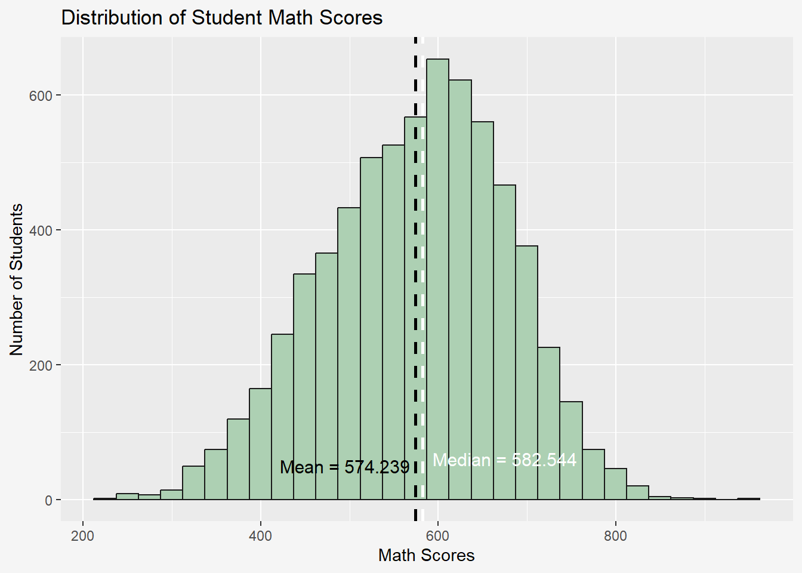
Show code
ggplot(data=stu_qqq_eda,
aes(x=Reading_Score)) +
geom_histogram(color= "grey10",
fill= '#ADD0B3') +
labs(x= "Reading Scores",
y="Number of Students",
title= "Distribution of Student Reading Scores") +
geom_vline(aes(xintercept=median(stu_qqq_eda$Reading_Score, na.rm = T)),
color="#FFFFFF",
linewidth=1,
linetype="dashed") +
annotate("text",
x=650,
y=60,
label= paste("Median =", round(median(stu_qqq_eda$Reading_Score, na.rm = T), 3)),
color= "#FFFFFF",
size=4) +
geom_vline(aes(xintercept=mean(stu_qqq_eda$Reading_Score, na.rm = T)),
colour="black",
linewidth=1,
linetype="dashed") +
annotate("text",
x=460,
y=50,
label=paste("Mean =", round(mean(stu_qqq_eda$Reading_Score, na.rm = T), 3)),
color="black",
size=4) +
theme(plot.background=element_rect(fill="#f5f5f5",colour="#f5f5f5"))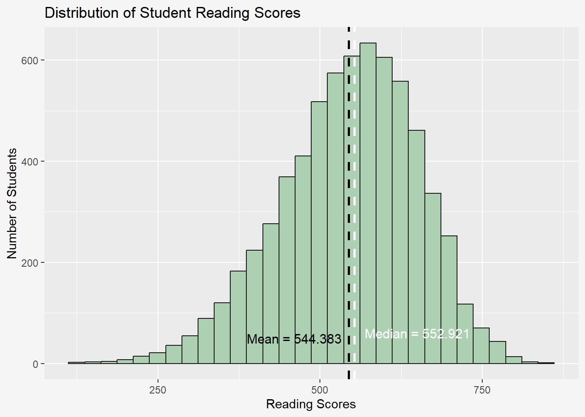
Show code
ggplot(data=stu_qqq_eda,
aes(x=Science_Score)) +
geom_histogram(color= "grey10",
fill= '#ADD0B3') +
labs(x= "Science Scores",
y="Number of Students",
title= "Distribution of Student Science Scores") +
geom_vline(aes(xintercept=median(stu_qqq_eda$Science_Score, na.rm = T)),
color="#FFFFFF",
linewidth=1,
linetype="dashed") +
annotate("text",
x=659,
y=60,
label= paste("Median =", round(median(stu_qqq_eda$Science_Score, na.rm = T), 3)),
color= "#FFFFFF",
size=4) +
geom_vline(aes(xintercept=mean(stu_qqq_eda$Science_Score, na.rm = T)),
colour="black",
linewidth=1,
linetype="dashed") +
annotate("text",
x=480,
y=50,
label=paste("Mean =", round(mean(stu_qqq_eda$Science_Score, na.rm = T), 3)),
color="black",
size=4) +
theme(plot.background=element_rect(fill="#f5f5f5",colour="#f5f5f5"))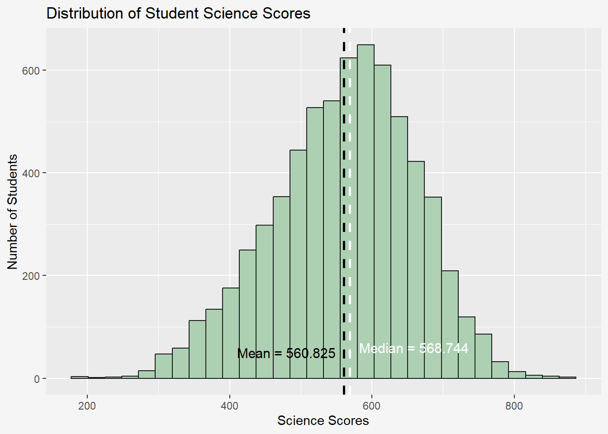
Student Performances Variations Within Schools
This analysis delves into the variations in student performances within schools in Singapore, showing the diversity of academic achievements within educational institutions. The below code chunk begins by grouping the data based on the unique school IDs. Then, it calculates the average scores for each subject, creating new variables. Only distinct combinations of school IDs and their corresponding average scores for each subject are included.
stu_sch <- stu_qqq_eda %>%
group_by(School_ID) %>%
mutate(math_avg = mean(Math_Score),
science_avg = mean(Science_Score),
reading_avg = mean(Reading_Score)) %>%
select(School_ID, math_avg, science_avg, reading_avg) %>%
unique() Below shows the histograms of the different average scores for each subject across different schools. The histogram is customized with 30 bins, with a customized color scheme, and median labels and values. This provides a comprehensive view of how average scores vary within schools for each subject.
Show code
sch_math <- ggplot(data = stu_sch,
aes(x = math_avg)) +
geom_histogram(bins=30,
color = "grey50",
fill = "#ADD0B3") +
geom_vline(
aes(xintercept = median(math_avg)),
colour="black",
linewidth = 0.8,
linetype = "dashed"
) +
annotate(
geom = "text",
x = 700,
y = 25,
label = paste("Median =", round(median(stu_sch$math_avg), 3)),
color = "black"
) +
ylim(0, 30) +
xlim(300,900) +
labs(x = "Average Scores", y = "Count", title = "Mathematics")
sch_math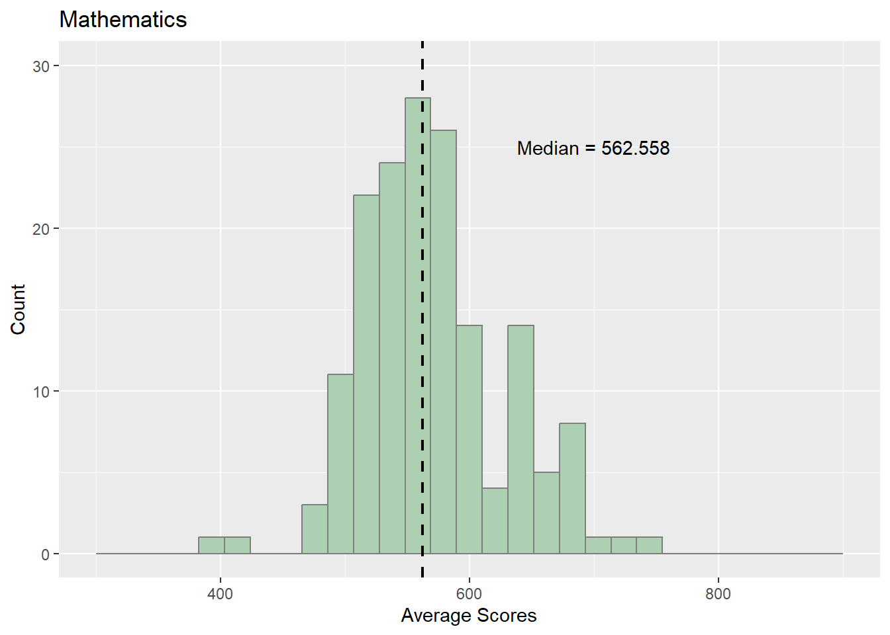
Show code
sch_read <- ggplot(data = stu_sch,
aes(x = reading_avg)) +
geom_histogram(bins=30,
color = "grey50",
fill = "#ADD0B3") +
geom_vline(
aes(xintercept = median(reading_avg)),
colour="black",
linewidth = 0.7,
linetype = "dashed"
) +
annotate(
geom = "text",
x = 700,
y = 25,
label = paste("Median =", round(median(stu_sch$reading_avg), 3)),
color = "black"
) +
ylim(0, 35) +
xlim(300,900) +
labs(x = "Average Scores", y = "Count", title = "Reading")
sch_read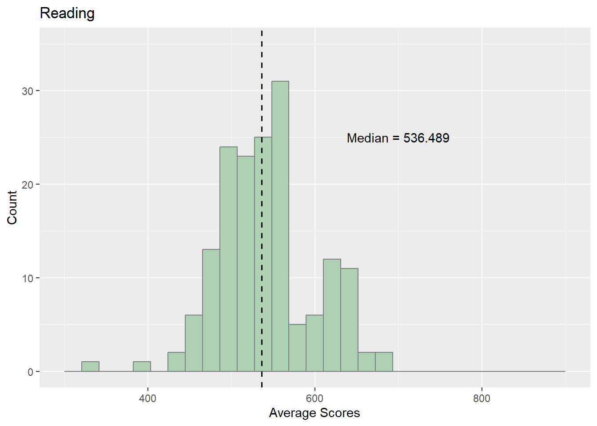
Show code
sch_sci <- ggplot(data = stu_sch,
aes(x = science_avg)) +
geom_histogram(bins=30,
color = "grey50",
fill = "#ADD0B3") +
geom_vline(
aes(xintercept = median(science_avg)),
colour="black",
linewidth = 0.7,
linetype = "dashed"
) +
annotate(
geom = "text",
x = 700,
y = 25,
label = paste("Median =", round(median(stu_sch$science_avg), 3)),
color = "black"
) +
ylim(0, 35) +
xlim(300,900) +
labs(x = "Average Scores", y = "Count", title = "Science")
sch_sci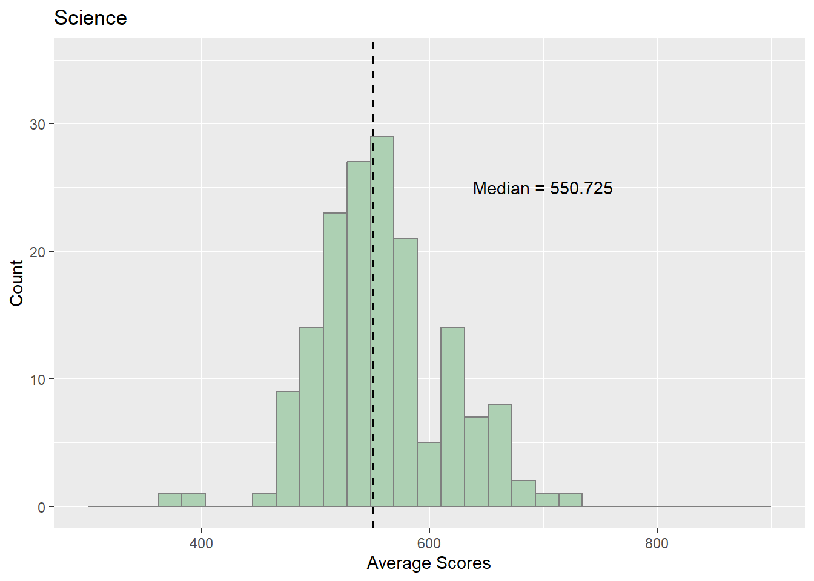
To further compare and contrast these distributions, side-by-side box plots are generated. These visualizations offer a better understanding of the performance patterns in different academic subjects across various educational institutions.
Show code
sch_math <- ggplot(data=stu_sch,
aes(y = math_avg)) +
geom_boxplot(width=0.1, outlier.colour = "#137a63") +
stat_summary(aes(x = 0),
geom = "point",
fun.y = "mean",
shape = 18,
colour = "#ADD0B3",
size = 3.5) +
xlim(c(-.1,.1))+
scale_x_continuous(NULL, breaks = NULL) +
labs(y = "Math Average", title = "")
sch_read <- ggplot(data=stu_sch,
aes(y = reading_avg)) +
geom_boxplot(width=0.1, outlier.colour = "#137a63") +
stat_summary(aes(x = 0),
geom = "point",
fun.y = "mean",
shape = 18,
colour = "#ADD0B3",
size = 3.5) +
xlim(c(-.1,.1))+
scale_x_continuous(NULL, breaks = NULL) +
labs(y = "Reading Average", title = "")
sch_sci <- ggplot(data=stu_sch,
aes(y = science_avg)) +
geom_boxplot(width=0.1, outlier.colour = "#137a63") +
stat_summary(aes(x = 0),
geom = "point",
fun.y = "mean",
shape = 18,
colour = "#ADD0B3",
size = 3.5) +
xlim(c(-.1,.1)) +
scale_x_continuous(NULL, breaks = NULL) +
labs(y = "Science Average", title = "")
sch_math + sch_read + sch_sci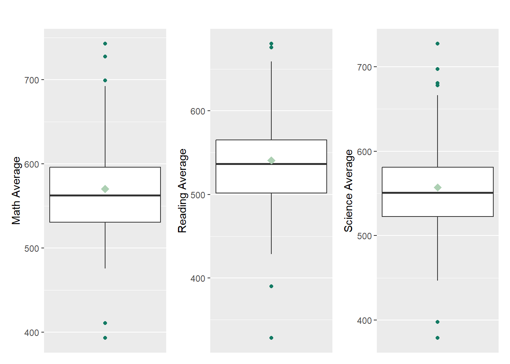
The results above reveal that there are no substantial differences in average scores across the three subjects. However, the presence of outliers indicates instances of both exceptional and underperformance within certain schools for each respective subject. These outliers are important data points that highlight differences in academic performance among various schools. They show variations in how well or poorly schools perform in different subjects.
Differences in Student Performance Among Genders
Similar to the previous analysis, this one explores variations in academic performance between male and female students, aiming to identify any notable differences in their scores across different subjects.
Show code
gender_math <- ggplot(data = stu_qqq_eda,
aes(x = Gender,
y = Math_Score)) +
geom_boxplot(color="grey50",
fill="#ADD0B3") +
geom_point(stat="summary",
fun.y="mean",
colour ="#137a63",
size=3) +
ylim(0,1000) +
labs(x = "", y = "Score", title = "Mathematics", axis.title.y = element_blank())
gender_read <- ggplot(data = stu_qqq_eda,
aes(x = Gender,
y = Reading_Score)) +
geom_boxplot(color="grey50",
fill="#ADD0B3") +
geom_point(stat="summary",
fun.y="mean",
colour ="#137a63",
size=3) +
ylim(0,1000) +
labs(x = "", title = "Reading") +
theme(axis.text.y = element_blank(), axis.title.y = element_blank())
gender_sci <- ggplot(data = stu_qqq_eda,
aes(x = Gender,
y = Science_Score)) +
geom_boxplot(color="grey50",
fill="#ADD0B3") +
geom_point(stat="summary",
fun.y="mean",
colour ="#137a63",
size=3) +
ylim(0,1000) +
labs(x = "", title = "Science") +
theme(axis.text.y = element_blank(), axis.title.y = element_blank())
gender_math + gender_read + gender_sci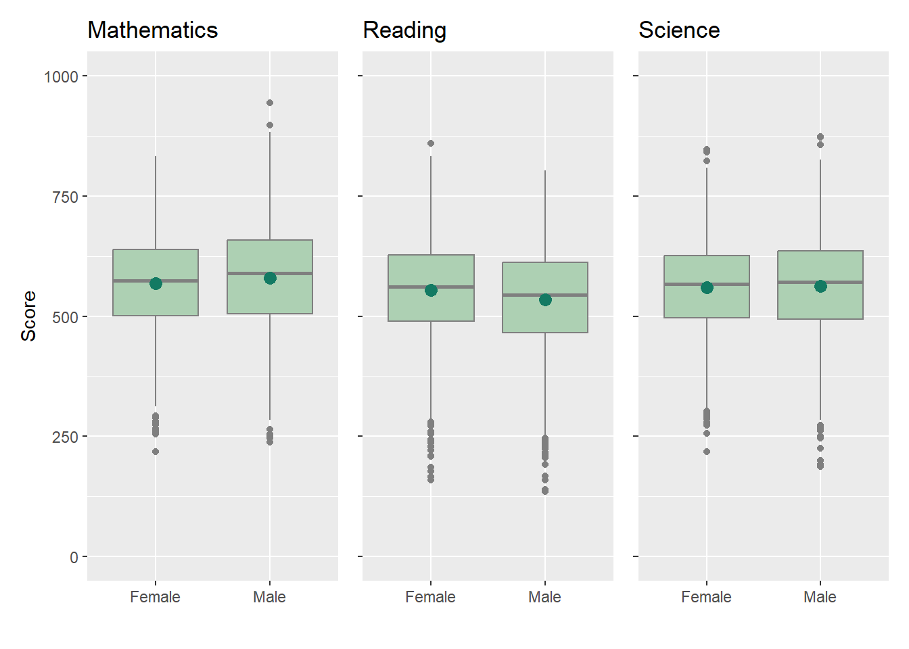
The boxplots reveal several insights into the performance of male and female students across different subjects. Notably, female students exhibit stronger performance in Reading, while male students demonstrate higher scores in Mathematics and Science. Despite these differences, the means and medians for each subject appear to be similar between both genders. Additionally, there is a noticeable presence of outliers, especially towards the lower scores, which indicates below-average performances.
Socioeconomic Status
Now, we will dive into the relationship between socioeconomic status and students performances. There are numerous variables in the dataset that can be used to be indicators of socioeconomic status, however this study will only be focused on the three:
Economic, Social and Cultural Status - holistic view of an individual or community’s position and resources
Artworks - how many works of arts (ex: paintings, sculptures, etc) present in the household
Artworks
The presence of paintings and sculptures at home can show how well-off a family is. When individuals can afford and like art, it often means they have enough money. Families with higher incomes may choose to buy art as a way to show off or express their cultural interests. On the other hand, families with less money might prioritize spending on essential things and not buy artworks.
Show code
art_dist <- ggplot(data = stu_data_artwork,
aes(x = Artwork)) +
geom_histogram(stat = "count",
color = "#137a63",
fill = "#ADD0B3") +
labs(y = "Count", x = "Number of Artworks")
art_dist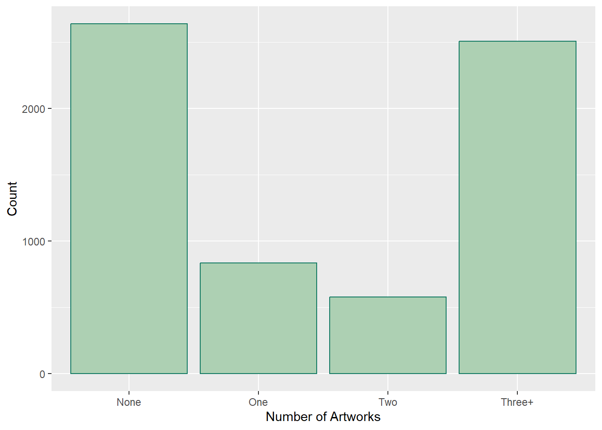
Show code
math_artwork <- ggplot(data = stu_data_artwork,
aes(x = as.factor(Artwork),
y = Math_Score)) +
geom_violin(color = "grey50",
fill = "#ADD0B3") +
geom_point(stat = "summary",
fun.y = "mean",
colour = "#137a63",
size = 3) +
geom_hline(yintercept = mean(stu_data_artwork$Math_Score),
linetype = "dashed",
color = "black") +
ylim(0, 1000) +
labs(x = "",
y = "",
title = "Math",
axis.title.y = element_blank())
math_artwork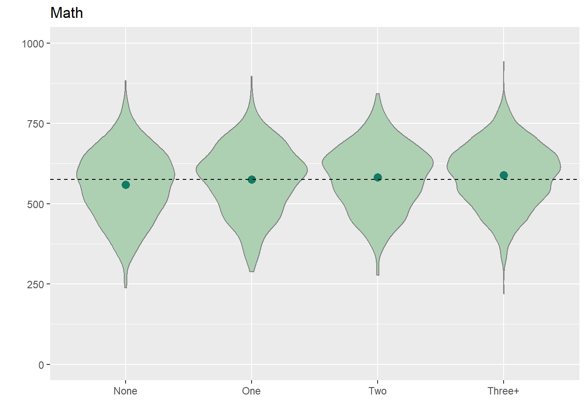
Show code
reading_artwork <- ggplot(data = stu_data_artwork,
aes(x = as.factor(Artwork),
y = Reading_Score)) +
geom_violin(color = "grey50",
fill = "#ADD0B3") +
geom_point(stat = "summary",
fun.y = "mean",
colour = "#137a63",
size = 3) +
geom_hline(yintercept = mean(stu_data_artwork$Reading_Score),
linetype = "dashed",
color = "black") +
ylim(0, 1000) +
labs(x = "",
y = "",
title = "Reading",
axis.title.y = element_blank())
reading_artwork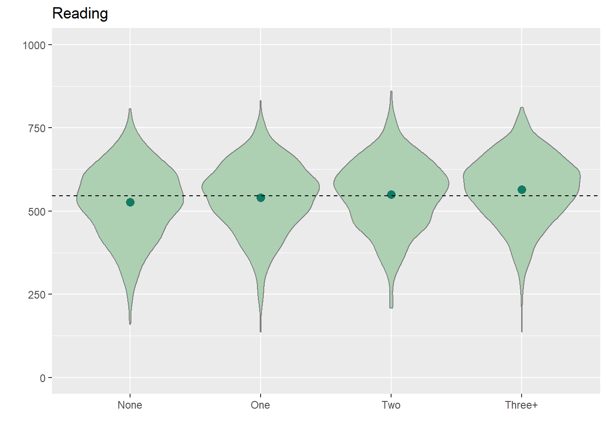
Show code
science_artwork <- ggplot(data = stu_data_artwork,
aes(x = as.factor(Artwork),
y = Science_Score)) +
geom_violin(color = "grey50",
fill = "#ADD0B3") +
geom_point(stat = "summary",
fun.y = "mean",
colour = "#137a63",
size = 3) +
geom_hline(yintercept = mean(stu_data_artwork$Science_Score),
linetype = "dashed",
color = "black") +
ylim(0, 1000) +
labs(x = "",
y = "",
title = "Science",
axis.title.y = element_blank())
science_artworkShow code
patchwork <- (art_dist / math_artwork) | (reading_artwork / science_artwork)
patchwork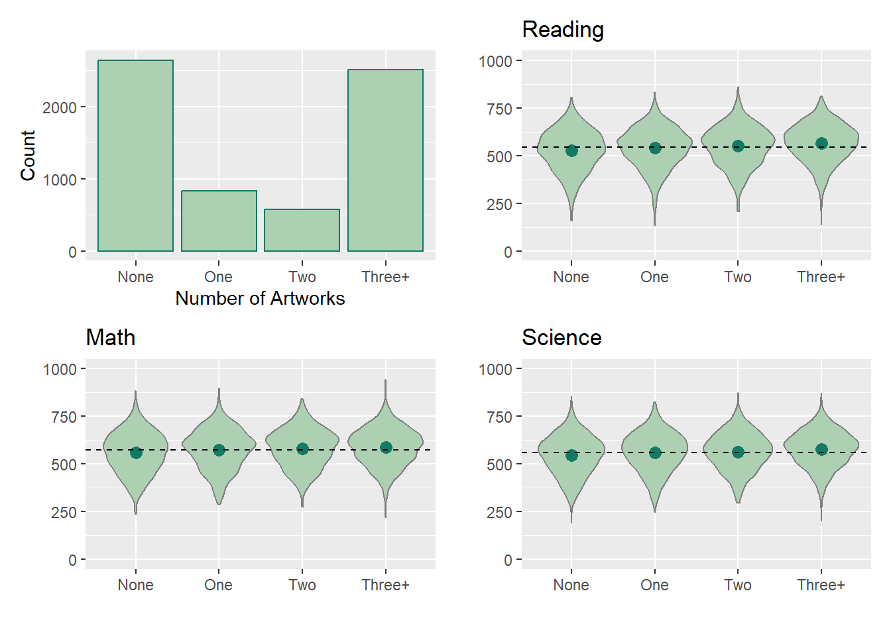
Based on the results above, although there is a slightly higher average score among students who own a greater number of artworks, the variations across the data are not substantial. The observed differences in scores remain relatively similar, thus limiting the results of this analysis. for those who owns a higher number of artwork is higher, the students performance do not vary a lot with the different number of artworks owned at home.
Conclusion
In this exercise, we illustrated the utility of both interactive and statistical plots in comprehending and analyzing the survey data, including the distribution, patterns, and relationships. The findings show that not all schools are equal, revealing variations in academic performances across different educational institutions. Secondly, the analysis of gender does not show a significant impact on students’ academic performances. Lastly, the influence of socioeconomic standing on students performance appears to be relatively modest, suggesting that while it plays a role, the impact is not very pronounced. In conclusion, the research shows the complexity of factors contributing to students’ educational achievements.